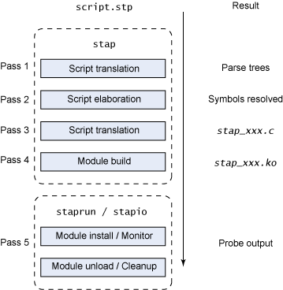

SystemTap¶
概述¶
SystempTap可以对运行中的内核和用户空间的进程进行实时的探测跟踪和分析。
工作原理¶
SystemTap的工作原理是使用linux提供的kprobe接口，将用户需要观测linux系统的行为转换成为c（使用kprobe)并且编译成为kernel object然后运行。systemtap使用一种触发式的工作方式，通过安装探针（probe）来监控系统的行为，一旦探针事件出现的话就会触发对应的代码。代码使用自己定义的
stap 流程从将脚本转换成解析树开始 (pass 1)
然后使用细化（elaboration）步骤 (pass 2) 中关于当前运行的内核的符号信息解析符号
接下来转换流程将解析树转换成C源代码 (pass 3) 并使用解析后的信息和tapset脚本（SystemTap 定义的库，包含有用的功能）
stap 的最后步骤是构造使用本地内核模块构建进程的内核模块 (pass 4)。
$ stap -ve 'probe begin { log("hello world") exit() }'
Pass 1: parsed user script and 76 library script(s) using 92476virt/22592res/2616shr kb, in 80usr/0sys/85real ms.
Pass 2: analyzed script: 1 probe(s), 2 function(s), 0 embed(s), 0 global(s) using 93000virt/23472res/2816shr kb, in 0usr/0sys/4real
ms.
Pass 3: translated to C into "/tmp/stapbx8Gpk/stap_7703b9bd08bd359932cf8da12019f6d8_813.c" using 93000virt/23628res/2964shr kb, in 0
usr/0sys/0real ms.
Pass 4: compiled C into "stap_7703b9bd08bd359932cf8da12019f6d8_813.ko" in 3240usr/510sys/4048real ms.
Pass 5: starting run.
hello world
Pass 5: run completed in 10usr/10sys/600real ms.
第二次运行的时候systemtap会去读取缓存内容。
$ stap -ve 'probe begin { log("hello world") exit() }'
Pass 1: parsed user script and 76 library script(s) using 92476virt/22592res/2616shr kb, in 80usr/10sys/85real ms.
Pass 2: analyzed script: 1 probe(s), 2 function(s), 0 embed(s), 0 global(s) using 93000virt/23472res/2816shr kb, in 0usr/0sys/4real
ms.
Pass 3: using cached /home/dirlt/.systemtap/cache/77/stap_7703b9bd08bd359932cf8da12019f6d8_813.c
Pass 4: using cached /home/dirlt/.systemtap/cache/77/stap_7703b9bd08bd359932cf8da12019f6d8_813.ko
Pass 5: starting run.
hello world
Pass 5: run completed in 0usr/10sys/586real ms.
安装¶
CentOS
yum install systemtap kernel-devel
从 http://debuginfo.centos.org/ 下载 kernel-debuginfo 和 kernel-debuginfo-common 并安装
rpm -Uhv kernel-debuginfo-*rpm，uname -r查看应该下载哪个版本。
参考: http://sourceware.org/systemtap/wiki/SystemTapOnCentOS
Ubuntu (a little troublesome)
基本使用方法¶
执行
stap -L PROBE列出匹配的PROBE及其上下文中可以使用的一些变量。$ stap -L 'syscall.open' syscall.open name:string filename:string flags:long mode:long argstr:string $filename:char const* $flags :int $mode:int
写一个脚本:
probe syscall.open { // do your custom actions }执行 stap /path/to/script 开始probe。
更多更详细的内容请参考官方文档： https://sourceware.org/systemtap/documentation.html
使用示例¶
谁删了我的文件
global pid2cmdline probe syscall.exec* { pid2cmdline[pid()] = argstr } probe kernel.function("sys_exit") { delete pid2cmdline[pid()] } probe syscall.unlink* { nm = user_string($pathname); if (isinstr(nm, "core")) { printf("unlink(at) %s\n", nm) task = task_current() while (task_pid(task) != 1) { printf("%d\t%s\t%s\n", task_pid(task), task_execname(task), pid2cmdline[task_pid(task)]) task = task_parent(task) } printf("------------------------\n") } }
系统级别的strace
$ stap -e 'probe syscall.* {printf("%s(%d) %s %s\n", execname(), pid(), name, argstr)}' 32657 nginx recvfrom 22, 0x7fffba367eef, 1, MSG_PEEK, 0x0, 0x0 18521 direwolf poll 0x7fff58d0ab60, 1, 4000 6633 top read 8, 0x3cdac118a0, 1023 32657 nginx epoll_wait 20, 0x21cbee0, 512, 2000 ...
谁起了/杀了我的进程
probe syscall.exec* { printf("execve %s %s\n", execname(), argstr) } probe signal.send { if (sig_name == "SIGKILL" || sig_name == "SIGTERM") printf("%s was sent to %s (pid:%d) by %s uid :%d\n", sig_name, pid_name , sig_pid, execname(), uid()) }
进程在干什么
probe process("/path/to/nginx").function("*") { printf("%s(%s)\n", probefunc(), $$parms) }
使用SystemTap做性能分析¶
2 Steps
对进程的backtrace进行采样统计
使用FlameGraph 1 对采样的结果进行可视化
C级别的性能分析
global s;
global quit = 0;
probe timer.profile {
if (pid() == target()) {
if (quit) {
foreach (i in s-) {
print_ustack(i);
printf("\t%d\n", @count(s[i]));
}
exit()
} else {
s[ubacktrace()] <<< 1;
}
}
}
probe timer.s(20) { quit = 1 }
脚本运行后生成的结果示例：
0x3cda6e86f3 : __epoll_wait_nocancel+0xa/0x67 [/lib64/libc-2.12.so]
0x433f49 : ngx_epoll_process_events+0x3b/0x409 [/usr/local/nginx/sbin/nginx]
0x4260d2 : ngx_process_events_and_timers+0xd6/0x165 [/usr/local/nginx/sbin/nginx]
0x432650 : ngx_worker_process_cycle+0x161/0x285 [/usr/local/nginx/sbin/nginx]
0x42e046 : ngx_spawn_process+0x642/0x991 [/usr/local/nginx/sbin/nginx]
0x431885 : ngx_start_worker_processes+0x93/0x100 [/usr/local/nginx/sbin/nginx]
0x430fd6 : ngx_master_process_cycle+0x282/0x8b8 [/usr/local/nginx/sbin/nginx]
0x40397a : main+0x538/0x53f [/usr/local/nginx/sbin/nginx]
0x3cda61ecdd : __libc_start_main+0xfd/0x1d0 [/lib64/libc-2.12.so]
0x4032a9 : _start+0x29/0x2c [/usr/local/nginx/sbin/nginx]
46
0x3cdaa0e4d0 : __write_nocancel+0x7/0x57 [/lib64/libpthread-2.12.so]
0x44d7f8 : ngx_write_fd+0x28/0x2a [/usr/local/nginx/sbin/nginx]
最后生成火焰图
$ stackcollapse-stap.pl a.bt | flamegraph.pl > a.svg
{kind=link}
如果是对动态语言，比如Python，PHP等高级语言进行性能分析，需要自己去生成对应语言级别的Backtrace，下面是如何获取Python的执行栈的核心代码。
probe timer.profile {
if (pid() == target()) {
_current = @var("_PyThreadState_Current@Python/pystate.c")
if (_current) {
bt = ""
f = @cast(_current, "PyThreadState")->frame
while (f != 0) {
filename = PyString_As_String(@cast(f, "PyFrameObject")->f_code->co_filename)
name = PyString_As_String(@cast(f, "PyFrameObject")->f_code->co_name)
lineno = @cast(f, "PyFrameObject")->f_code->co_firstlineno
bt .= sprintf("%s:%d %s\n", filename, lineno, name)
f = @cast(f, "PyFrameObject")->f_back;
}
bts[bt] <<< 1
}
}
}